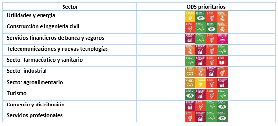

9. Plan de Sostenibilidad en Nuestro Sector Productivo
En el sector de la informática y el desarrollo web, implementar un plan de sostenibilidad es esencial para reducir el impacto ambiental y fomentar prácticas responsables.
Nuestro plan se basa en tres ejes principales: eficiencia energética, gestión responsable de residuos y concienciación del equipo.

- Optimización de recursos: uso de servidores energéticamente eficientes, reducción del tiempo en ejecución de aplicaciones y programación limpia para minimizar el consumo de energía.
- Digitalización consciente: evitar la sobrecarga de datos innecesarios en la nube, optimizar imágenes y archivos para reducir el ancho de banda y energía de transmisión.
- Gestión de residuos electrónicos: promover la reutilización de equipos informáticos, reciclaje en puntos oficiales y alargar la vida útil mediante mantenimiento y actualizaciones.
- Formación interna: incluir en nuestras rutinas profesionales la formación en sostenibilidad tecnológica y fomentar una cultura de respeto ambiental en el entorno laboral.
Este plan se alinea con el RA5, ya que busca realizar actividades sostenibles que minimicen el impacto ambiental en todas las fases del desarrollo tecnológico. Como equipo, asumimos el compromiso de integrar estas medidas en nuestros procesos productivos para contribuir activamente a un futuro más sostenible.